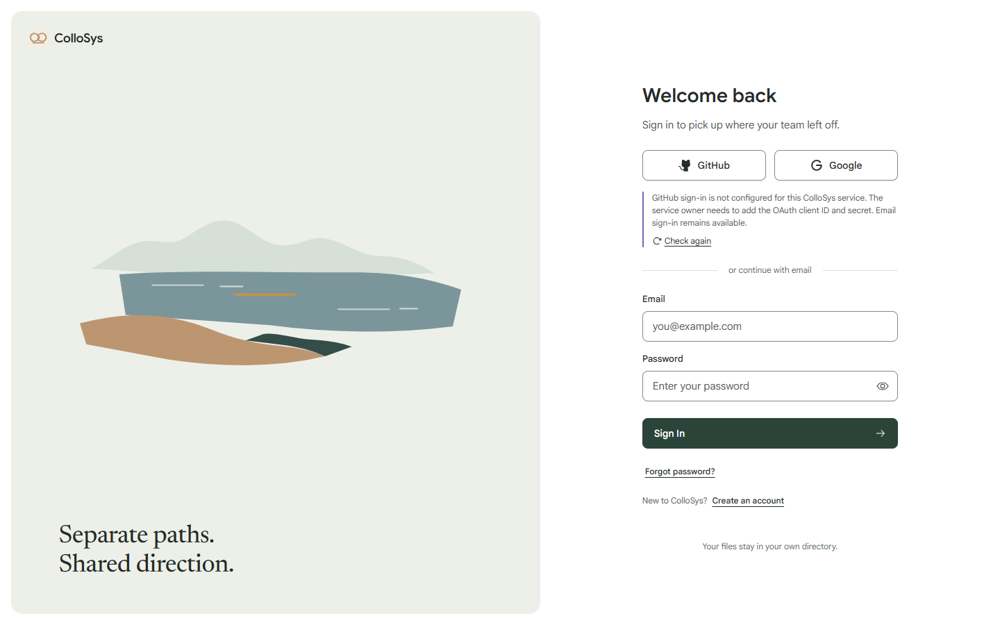
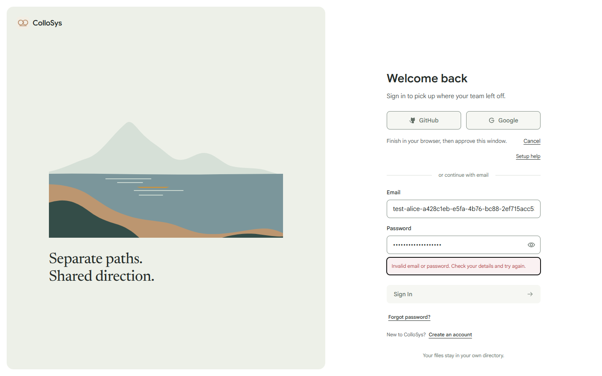
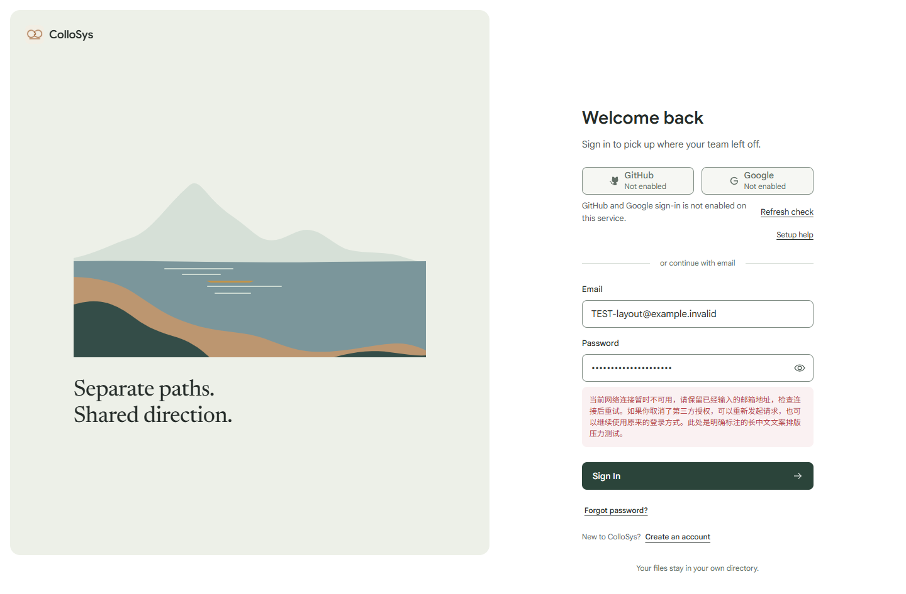
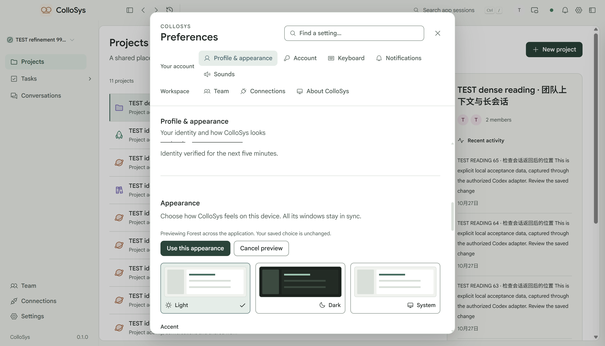
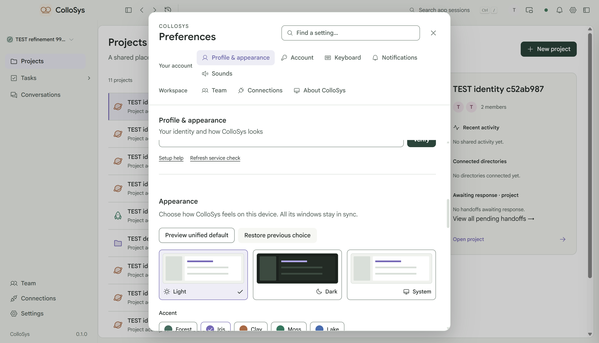

2026-10-31 · 正式应用 · 6f9c577 后的本地修改
认证、登录构图与完整产品精修
这些画面来自运行中的完整应用和隔离 TEST 账号。原生验收复制了当前用户的浅色 / Iris、侧栏与缩放配置。真实 GitHub、Google 授权按用户决定待配置；受控回调结果不代表已经通过外部授权。
当前登录画面
风景与标题组成同一组：远山位于连续水面后方，近岸接壤并围合水面。主山、岸线与画框稳定，只有倒影与局部光带响应。
25% 整页检查
下列 1440×900 原始整页图按 360×225 CSS 像素显示，未裁切、替换字体或重绘。
浅色深色
真实改造前后

改造前：实际字体与正式应用，状态插入使表单重新居中。改造后：未启用入口明确禁用，简短状态与独立帮助，表单起点稳定。
等待、取消与重试共用认证事务。
长中文错误是声明的布局压力测试；主要输入锚点保持不变。改造前状态录像 · 四尺寸布局与互斥结果 · 动作与 reduced-motion 记录
真实原生窗口与当前用户配置

Forest 预览会作用于实际应用。
取消、离开、采用、重开与恢复原选择均单独验证。实际用户配置只读元数据 · 原生操作结果
账号关联与原有业务
真实设置页与本地后端完成密码复验、GitHub / Google 关联、明确确认、同账号同项目及解除关联。外部身份凭证在提供商验证边界受控注入，未联系真实提供商。另一个浏览器账号打开回调页时不会被切换。
验收边界
可操作流程、视觉画面、性能和外部配置分别记录。测试通过不代表用户已经认可审美，也不代表全平台 60fps。当前构建指纹、各项实际结果及剩余慢路径见执行记录与性能记录。